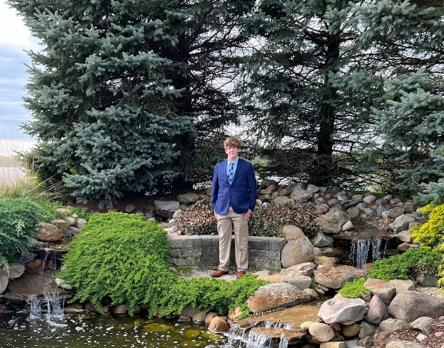

My name is Andrew Cash, and I go to Kent State University, where I'm currently going for my Bachelor's in Computer Science.

I'm currently very open to working in the field of technology, especially software development. My main goal currently is to find job experience and to pass all my classes with flying colors.
It will be challenging, but that just makes it all the more achieving.
My hobbies include recreational soccer, trying new foods, and watching too much YouTube. I'm afraid of boredom, so I'm always trying to find something interesting.